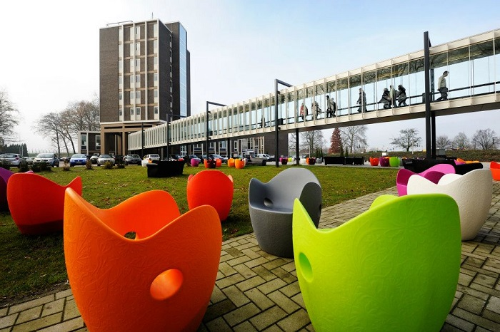

Acasă
Acasă Țări
Țări Catalog
Catalog Galerie foto
Galerie foto Experiente
Experiente Despre
DespreFontys UAS



Descriere
Universitatea de Ştiinţe Aplicate Fontys a fost înființată în anul 1992 prin asocierea a 5 instituţii de învatamânt superior din sudul Olandei. Ca rezultat al acestei asocieri, Fontys este în prezent cea mai mare instituţie de învatamânt superior din ţară. Aceasta dispune de 40 de campusuri universitare în diferite oraşe şi oferă peste 120 de programe universitare şi 17 programe de master în domeniul tehnologiilor informaţionale, economiei, ştiinţelor sociale, educaţiei şi sănătăţii publice. Numele universităţii Fontys provine de la cuvântul latin “Fons” care înseamna “sursă”. Fontys îsi propune să fie o sursă inepuizabilă de cunoaştere, inspiraţie, dezvoltare şi inovaţie pentru studenţii săi. Personalul didactic numără aprox. 4 000 de persoane. Ei instruiesc peste 38 000 de studenti şi oferă consultanţă la peste 15 000 de funcționari din companii şi organizații internaţionale. Programele universitare şi de master se predau în diferitele campusuri ale universităţii - în total 22, concentrate cu precădere în sudul Olandei. Cele mai mari campusuri ale Fontys sunt în Eindhoven, Tilburg, Venlo şi Sittard, iar cele mai mici - în Amsterdam, Rotterdam, Hertogenbosch şi Roermond.
Informații generale
Tara: Olanda
Limba de predare: engleza
Ani de studiu: Bachelor: 4, Master: 1
Inceput an: septembrie/februarie
Burse: Nu
Campusuri: Eindhoven, Tilburg, Venlo
Cazare: intre 350 si 425 de euro pe luna
Programe de studiu:
International Business and Management Studies
International Business Economics
International Marketing
International Fresh Business Management
Industrial Engineering & Management
ICT & Software Engineering
ICT & Business
ICT & Technology
Logistics Management/Engineering
Electrical & Electronic Engineering
Mechanical Engineering
Mechatronics Engineering
Programe de master
Master of Architecture
Master of Business Administration (MBA) (part-time)
Master of Choreography
Master of Science in Business & Management
MSc in International Logistics / Procurement / SCM
Master of Music
Master of Urbanism